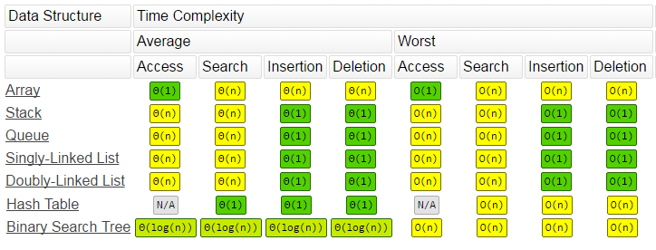

In this assignment, you will get a better understanding on how to design and implement a mini library search system through the use of Template Class, Binary Search Tree (BST), and Hash Table data structure.
In this assignment, you are going to implement a mini Library System, which allows library users to search for books (Library Item).
There are 6 classes / class templates / struct.
Your solution to this assignment must be based on the given skeleton code provided in the Download section.
Your task is to complete the following:
Suggestion: You can work in this order (one by one with the test cases): BSTImplementation.h, HashTableImplementation.h, Library.cpp.
You need to implement those missing functions according to specification in the header files which are BST.h, HashTable.h and Library.cpp. You also need to read LibraryItem, Book related files. These are the only 3 files you are supposed to modify, zip, and then submit to Zinc.
LibraryItem/Book names are unique. Also, there is only at most one book publishing every day. Thus, all the names and publishing dates are unique.
Comments in the corresponding header files list out the detailed requirements. The description below supplements the only missing information. You need to read both the source/header files and the webpage description carefully to get the whole picture.
While you probably will jump back and forth as you read the materials as they reference each other, we recommend the following general reading order:
Read the FAQ & Clarifications section for some common clarifications. You should check that a day before the deadline to make sure you don't miss any clarification, even if you have already submitted your work then.
Submission details are in the Submission and Deadline section.
Optional Info (not related to assignment implementation) : Hash Table allows O(1) access of an Item via the exact key. HashTable is suitable for primary keys (unique id) lookups. It allows the user to retrieve an item by a key. BSTIndices are suitable to Range Queries/Scan and HashTable provides O(1) lookup. However, HashTable is not suitable for doing a range search. Since the nature of HashTable make the item spread into a different portion of the array. Binary Search Tree is more suitable to do range. They have different advantages in different use cases. You can find more from this link or searching by keyword "Hash Table and Tree in Database"
There is a private member loadLimit that determines when rehashing needs to happen.
If adding a new item to the HashTable would result in exceeding the load factor (size of table *
load limit fraction) (i.e. active cells, rehashing will need to be performed first, before
adding the new item.
To perform rehashing, you need to create a new hash table of twice the size of the current hash table, and insert the items in the current hash table to the new hash table. The cell statuses of the cells in the new hash table (expanded table) will be either ACTIVE or EMPTY.
The insertion order of the items to the new table is the same as their appearance order in the
old/original table Cell array (i.e. iterate from first element in array till the
last element; rfrom index 0, index 1, index 2, ...)
For simplicity, you may assume the addition of items back to the expanded table will always be successful.
The following example also appears in the provided main08.cpp . You may check its code and the corresponding sample output.
Suppose we have a hash table that stores integer keys and data
With the provided print function, the current hash table looks like this:
0: [Active]{6} | 1: [Active]{13} | 2: [Active]{1} | 3: [Empty] | 4: [Empty] | 5: [Empty] | 6: [Empty]
Then, if we try to add another item {20,200} to it, the load limit will exceed as having 4 items in total is more than the loadLimit*m (0.5*7=3.5). Rehashing is needed.
We will insert the existing items {6,66}, {13,133}, and {1,11} to the expanded table, in that order, as it is how they are ordered in the table Cell array as shown above.
That is, start with an empty table of double size (i.e. size=14):
0: [Empty] | 1: [Empty] | 2: [Empty] | 3: [Empty] | 4: [Empty] | 5: [Empty] | 6: [Empty] | 7: [Empty] | 8: [Empty] | 9: [Empty] | 10: [Empty] | 11: [Empty] | 12: [Empty] | 13: [Empty]]>
We first add {6,66} to it, so it becomes:
0: [Empty] | 1: [Empty] | 2: [Empty] | 3: [Empty] | 4: [Empty] | 5: [Empty] | 6: [Empty] | 7: [Active]{6} | 8: [Empty] | 9: [Empty] | 10: [Empty] | 11: [Empty] | 12: [Empty] | 13: [Empty]]
>
Then we add {13,133} to it, it becomes:
0: [Active]{13} | 1: [Empty] | 2: [Empty] | 3: [Empty] | 4: [Empty] | 5: [Empty] | 6: [Empty] | 7: [Active]{6} | 8: [Empty] | 9: [Empty] | 10: [Empty] | 11: [Empty] | 12: [Empty] | 13: [Empty]]
Finally we add {1,11} to it, it becomes:
0: [Active]{13} | 1: [Empty] | 2: [Active]{1} | 3: [Empty] | 4: [Empty] | 5: [Empty] | 6: [Empty] | 7: [Active]{6} | 8: [Empty] | 9: [Empty] | 10: [Empty] | 11: [Empty] | 12: [Empty] | 13: [Empty]
Rehashing is done at this point. Hint: you should of course need to deallocate memory for the old table accordingly then.
After the rehashing, the addition of {20,200} can now be performed. The addition result is:
0: [Active]{13} | 1: [Empty] | 2: [Active]{1} | 3: [Empty] | 4: [Empty] | 5: [Empty] | 6: [Empty] | 7: [Active]{6} | 8: [Active]{20} | 9: [Empty] | 10: [Empty] | 11: [Empty] | 12: [Empty] | 13: [Empty]
Enum classes are basically scoped and strongly typed enums. Two of them (Mode and CellStatus) can be seen in HashTable.h. You may check out the given print function to see how it can be used:
enum class Mode
{
LINEAR,
QUADRATIC,
DOUBLE
};
enum class CellStatus
{
EMPTY,
ACTIVE,
DELETED
};
//print the hash table to the ostream
//given; just like the rest of this file, do not modify
void print(std::ostream& os) const
{
for(int i=0; i<m; i++)
{
os << i << ": ";
if(table[i].status == CellStatus::ACTIVE)
os << "[Active]{" << table[i].key << "," << *table[i].data << "}";
else if(table[i].status == CellStatus::EMPTY)
os << "[Empty]";
else if(table[i].status == CellStatus::DELETED)
os << "[Deleted]";
if(i!=m-1)
os << " | ";
}
os << std::endl;
}
Skeleton code: skeleton.zip
Just do what you did in lab 1 to put the skeleton code in your VS Code IDE. In VS Code terminal, running "make" command will create 21 executables: test1.exe, test2.exe, etc. For those 21 given test cases compiled from their corresponding mainN.cpp file, where N is the test case number, together with BSTImplementation, HashTableImplementation, and Library.cpp. Run ./testN.exe to run the program. See the Sample Output and Grading Scheme section for more information about the test cases.
# Clean the built file
make clean
# Build the source code
make
# Try execute the test case main1.cpp, which corresponding to test1.exe etc
./test1.exe
./test21.exe
Your finished program should produce exactly the same output like this. Please note that sample output, naturally, does not show all possible cases. It is part of the assessment for you to design your own test cases to test your program. Be reminded to remove any debugging message that you might have added before submitting your code.
Also, after testing, make sure your submitted code can compile with the unmodified main.cpp and header files. Put in dummy/empty implementation whenever needed.
The program should terminate without any memory leak.
Deadline: 23:59:00 on Dec 05, 2020 (Saturday)
Notice: ZINC submission for assignment 3 will be open at a later time. Please refer to the ZINC Submission Guide for how to make a submission to ZINC properly.
Please zip three cpp files only: BSTImplementation.h, HashTableImplementation.h,
and Library.cpp. Zip only these 3 files, NOT a folder
containing them. Submit the zip file to ZINC. ZINC usage
instructions can be found here.
Notes:
It is required that your submissions can be compiled and run successfully in our online autograder ZINC. If we cannot even compile your work, it won't be graded. Therefore, for parts that you cannot finish, just put in dummy implementation so that your whole program can be compiled for ZINC to grade the other parts that you have done. Empty implementations can be like:
int SomeClass::SomeFunctionThatIsTooDifficultToImplementForMe()
{
return 0;
}
void SomeClass::AnotherFunctionThatIsTooDifficultToImplementForMeOhNo()
{
}
There will be a penalty of -1 point (out of a maximum 100 points) for every minute you are late. For instance, since the deadline of the assignment is 23:59:00 on Dec 05th, if you submit your solution at 1:00:00 on Dec 06th, there will be a penalty of -61 points for your assignment. However, the lowest grade you may get from an assignment is zero: any negative score after the deduction due to late penalty (and any other penalties) will be reset to zero.
Q: My code doesn't work / there is an error, here is the code. Can you help me fix it?
A: As the assignment is a major course assessment, to be fair, you are supposed to work on it on your own and we should not finish the tasks for you. We might provide some very general hints to you, but we shall not fix the problem or debug it for you.
Q: Can I add extra helper functions?
A: You may do so in the files that you are allowed to modify and submit.
Q: Can I include additional libraries?
A: No. Everything you need is already included - there is no need for you to add any include statement (under our official environment).
Q: What should be the key of Binary Search Tree Index (bstIndex) in Library.h/cpp?
A: The publishDate of LibraryItem will be the key of bstIndex. You need to convert publishDate(int) to string and insert into bstIndex according to the publishDate(string). You can use to_string(publishDate) to convert the integer value to string. The string library is already included. So you do not need to include the string library again. Here is the code example. You also can find more detail in cpp documentation .
// to_string example
std::string pi = "pi is " + std::to_string(3.1415926);
std::string perfect = std::to_string(1+2+4+7+14) + " is a perfect number";
std::cout << pi << '\n';
std::cout << perfect << '\n';
Q: How to check memory leakage?
A: TA Wallace prepared this guideline: https://course.cse.ust.hk/comp2012/assignments/assignment3/assignment3/leak-checking/
Q: How to handle collision in rehashing?
A: The approach will be the same as add a new element. If you try m times and not successful, you can skip that item without return -1 and continue for the next item.
Q: Question of runtime checking?
A: We will use a large data size case to test the runtime, which doesn't pass the runtime test. I will read the source code implementation of BST, HashTable get, insert, delete, and validate is that exhaustive approach which maintaining runtime N for all(best, average, worst) situation. (e.g. hashtable, rehashing case is a worst-case, it can exceed O(1) promise.)  Complexity Reference Suppose you follow the lecture notes and assignment guidelines. It will be good.
Q: Behavior of borrow and return item in Library Class
A:
//search the book via hashTableIndex
//if not found print "Item {name} was not found" return false
//if found and check isInStock true print "Borrowed Item {name}" and return true
//else isInStock false print "Item {name} is not in stock currently" and return false
bool borrowItem(string name) const;
//search the book via hashTableIndex
//if not found print "Item {name} was not found" return false
//if found and check isInStock false print "Returned Item {name}" and return true
//else isInStock true print "Item {name} is in stock currently" and return false
bool returnItem(string name) const;
Q: Do Deep Copy copy the DELETED cell status?
A: You need to copy all cells, even the status is DELETED or EMPTY. For deleted cells, we
recommend you set the data address to nullptr in order to prevent abnormal behavior. Also, if
the cell is activate, you are required to allocated new memory for the active cell data.
Although isReferenceOnly == true may possibly result in memory leakage. Since we don't specify
that behavior, we will not test memory leakage in that situation.
Q: For HashTable<K,T>::get, what if the specified key cannot be found in the
table?
A: You may return nullptr just like the sample output. You can also return nullptr when your
attempt to find the key fails after m collisions/attempts (just like the add
function).
Q: The difference and use of those two Hash Functions h and h2?
A: There are two Hash Functions inside the HashTable Class. They are h and h2. Hash Function h takes the type T key as input. Hash Function h2 takes the type int collision count as input. Hash Function h2 is only utilized when the collision resolving mode is double.